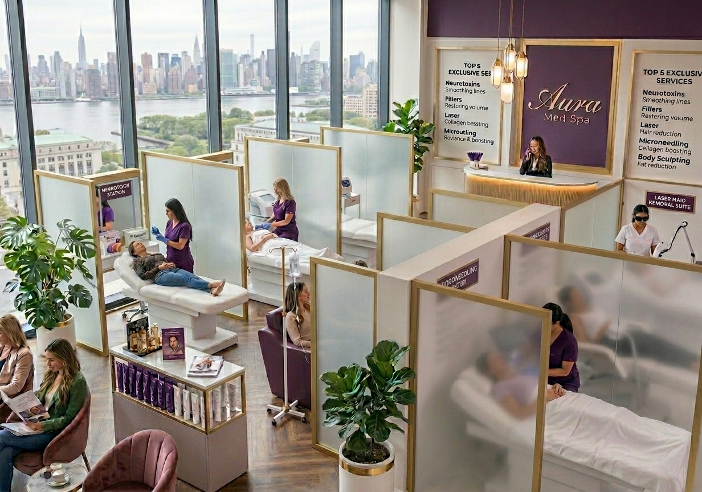

Chapter 05 — Roadmap & Next Steps
Next Steps
Let's Talk About
Your Case
Book your discovery session — 30 minutes, no obligation.

YOUR TEAM
CTA 01
Book a Demo
CTA 02
Request a Worked ROI Example
CTA 03
Schedule a Site Visit
What the discovery session includes
Workshop session (60–90 min) — bring one specific process (account opening, claims intake, technical support, concierge, etc.). We map it to MassaPro IVR end-to-end and identify the integration points.
Custom ROI estimate — we model the cost-per-interaction comparison between your current model and MassaPro IVR for the specific process, using your volumes and your fully-loaded staffing costs.
Reference architecture — we produce a one-page reference architecture for your IT team, showing the ACD integration, the API gateway, the CRM connectors, and the security boundary.
Pilot proposal — if the ROI case holds, we propose a pilot deployment at 1–3 locations, 60–90 days, with success criteria agreed up front. Pilot includes kiosk hardware, platform subscription, and MassaPro implementation team.
Decision points — at the end of the pilot, you have the data to decide: scale to the full network, iterate on the configuration, or stop. No long-term lock-in.
No commitment
·
No cost
·
No obligation
hello@massapro.com
|
receptionist.massapro.com